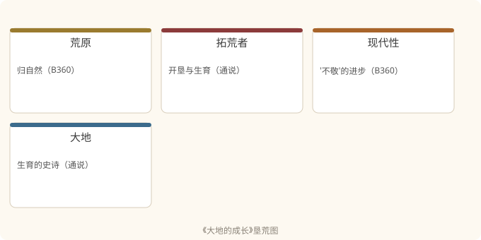

大地的成长
一、基本信息
| 作者 | 克努特·汉姆生 |
|---|---|
| 成书/出版 | 1917年（Britannica B360：Markens grøde (Growth of the Soil, 1917)） Knut Hamsun — Encyclopaedia Britannica（百科全书） |
| 国别/地区 | 挪威 |
| 时代 | 近代 · 20世纪10年代 |
| 体裁 | 长篇小说 |
| 语言 | 挪威语 |

《大地的成长》垦荒图（主题·结构图）
二、创作背景
Britannica（B360）：'expresses a back-to-nature philosophy'（表达'归自然'的哲学）。
Britannica（B360）：本作发表三年后（1920）获诺贝尔文学奖（'Won the Nobel Prize for Literature in 1920'——B360 语境）。
题材（通说待核）：拓荒者艾萨克在荒原开垦——土地与生育的史诗。
三、内容脉络
（通说待核——B360未载剧情）拓荒者与荒原：开垦、婚姻与生育。
（通说待核）现代性的侵入：矿线与金钱。
四、主要人物表
| 人物 | 身份 | 说明 |
|---|---|---|
| 艾萨克 | 拓荒者 | （通说待核，B360未载） |
| 英格尔 | 妻子 | （通说待核，B360未载） |
五、主题与艺术特点
- '归自然'哲学（B360：back-to-nature）。
- 土地与生育的史诗（通说待核）。
- 对进步的'漠然或不敬'（B360：indifferent to or took an irreverent view of progress——Pan 语境延伸）。
六、影响与评论
- Britannica：1920年诺贝尔文学奖（B360）。
Knut Hamsun — Encyclopaedia Britannica（百科全书） - Britannica：'back-to-nature philosophy'（B360）。
Knut Hamsun — Encyclopaedia Britannica（百科全书）
七、阅读建议
难点
- 挪威荒原农耕社会。
- 与《饥饿》的文风对比。
- 《大地的成长》中译本（人民文学等——通说待核）。
- 挪威文原版。
汉姆生进阶；与《饥饿》对读。
八、待核实
- 艾萨克/英格尔人名核对（B360未载）。
- 剧情细节核对（通说）。
- 1920诺奖授奖理由与本作的关系待核。